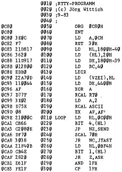

80-Bus Journal |
September 1983 · Ausgabe 9 |
Der Grundgedanke bei der Originalversion des im letzten Heft abgedruckten RTTY-Programms war, dass es ohne Hardwareaenderungen auf der Grundplatine des Nascom 1 laufen koennen sollte. Durch diese Beschraenkung liessen sich jedoch solche Annehmlichkeiten wie Vorschreiben bei Empfang, Abruf von Festtexten, ASCII/Baudot-Umschaltung usw. nicht realisieren. Das hier vorgestellte Programm bietet diesen Komfort, erfordert aber eine Hardwaremodifikation. Fuer die seriell/parallel- und parall./ser.-Wandlung befindet sich auf dem Nascom bereits ein spezieller Baustein, der UART. Dieser UART könnte prinzipiell direkt ueber den Bus fuer verschiedene Formate, z.B. 5 Bit-Daten und 1.5 Stopbits, wie es bei Baudot üblich ist, programmiert werden. Leider ist diese Moeglichkeit von den Entwicklern des Nascom nicht vorgesehen worden und der UART fest fuer 8 Bit-Daten verdrahtet. Ich habe daher SBS (Pin 36) direkt und CLS 1, CLS 2 (Pin 37,38) ueber einen Inverter (z.B. 74LS04 oder Transistorinverter) mit Bit 2 von Port 0 verbunden. Die alten Verbindungen muessen natuerlich auf irgendeine Weise aufgetrennt werden. Nach dem Einschalten oder Reset stellt sich automatisch das vom Cassetten -Interface benoetigte Format ein. Zum Einstellen der Baudrate verwende ich Kanal 1 eines Z80A-CTCs (ZC/T01 an die entsprechenden Clockeingaenge des UARTs). Wer keinen CTC besitzt, kann die notwendigen Clockfrequenzen auch z.B. mit einem NE 555 erzeugen und die Baudraten von Hand umschalten.
Das Programm kennt folgende Befehle, die bis auf die ersten beiden sowohl bei Empfangs- als auch bei Sendebetrieb Gueltigkeit haben:
| Ctrl A: | ASCII |
| Ctrl B: | Baudot |
| Ctrl C: | bei Baudot: Aendern der Bu/Zi-Ebene bei ASCII : K1-Option von NAS-SYS ein/ausschalten |
| Ctrl D: | Baudrate erniedrigen (45.45,50,75, 100,110,150,300,600 Baud) |
| Ctrl I: | Baudrate erhoehen |
| Ctrl P: | Text 1 |
| Ctrl Q: | Text 2 |
| Ctrl R: | Text 3 |
| Ctrl S: | Text 4 |
| Ctrl T: | Text 5 |
| Ctrl Z: | Sender ein/(aus) ; Bit 4 von Port 0 kann zum Schalten des Senders verwendet werden. |
Der Vorschreibspeicher ist etwa 2 kByte lang und beginnt bei 17D8H, der Stack liegt bei 1000H.Festtexte koennen beliebig lang sein und muessen mit einer 0 abgeschlossen werden. Bei 0DH (CR) wird immer auch ein 0AH (LF) ausgesendet. Die Anfangsadressen der 5 Texte muessen zwischen 0F00H und 0F09H eingetragen werden. Den Abruf von nicht definierten Texten sollte man vermeiden. Fuer die Texte 2-5 koennen auch die entsprechenden Cursor-Tasten verwendet werden. Bei Erreichen eines ‚@‘ im Vorschreibspeicher schaltet das Programm nach einer kurzen Verzoegerungszeit auf Empfang um, Falls nicht von Hand gegeben, fuegt das Programm am Ende einer RTTY-Zeile automatisch CR/LF ein. Am Beginn einer neuen Zeile wird bei Baudot immer die Ebenenkennung gegeben, um die Synchronisation mit der Gegenstation sicherzustellen. Im Assemblerlisting befindet sich eine Zeile mit SCAL 7DH, welches NAS-SYS 1 Benutzer durch SCAL 61H ersetzen muessen.
ZEAP Z80 Assembler – Source Listing
| Seite 15 von 28 |
|---|